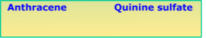

Familiarization with excitation and emission spectra, Mirror-image relation and Stokes Shift

×
Manual
- Prepare a 1.3×10-4 M solution of anthracene in cyclohexane and a 2.3×10-4 M solution of quinine sulfate in aqueous 0.5 M H2SO4. The solution concentrations are chosen such that optical densities are less than 0.1 at the excitation wavelength. Here the solutions are taken in two volumetric flasks.
- Carry out the absorption and fluorescence measurements of the solutions as follows.
- Click on the volumetric flask containing anthracene solution to take it to the instrument table.
- Click on the quartz cuvette (path length, 1 cm ×1 cm) to take it to the instrument table. Quartz cuvettes for spectrophotometric measurements are transparent only on two opposite sides, unlike the all-side transparent quartz cuvettes used for fluorescence measurements.
- Click on the 5 mL‑capacity pipette to collect 3 mL of the experimental solution which will be transferred into the quartz cuvette. In real operation, one has to set the volume to 3 mL in the pipette and an appropriate tip should be attached prior to dipping it in the solution.
- Click on the pipette to draw the solution into it.
- Click on the pipette to take it out of the volumetric flask.
- Click on the pipette again to transfer the solution into the cuvette.
- To start the absorption spectral scan, click on the pop-up “Start Absorption Measurement”.
- Turn on the spectrophotometer by clicking on the power button. In real operation, it takes approx. 30 min for initialization of the instrument.
- Open the lid of the sample chamber of the spectrophotometer by clicking on the lid for placing the sample in the cell-holder.
- Click on the cuvette to place it in the sample holder. One has to use pure solvent as the sample blank or reference in this measurement. Here a double beam spectrophotometer is shown.
- Close the chamber lid by clicking on it.
- Open the measurement set-up screen by clicking on the absorption measurement icon on the computer monitor.
- On the screen, enter the wavelength range. Start: 620 nm End: 260 nm. In real operation, the wavelength range of incident light for the sample is chosen and the wavelength scan is run via the accompanied computer software. One can run the scan in absorbance (A) or transmittance (%T) mode.
- Click on the green 'Start' button on the measurement set-up screen to run the wavelength scan. Observe the wavelength scan.
- Click on 'Close' button when spectral scan is complete. In real operation, the scan data are stored in the computer. The instrument stores data and therefore asks for the Sample File name. One enters a file name to save the data.
- To take the cuvette out of the sample chamber, first click on the sample chamber lid to open it and then on the cuvette.
- Close the sample chamber lid by clicking on it.
- Click on the pop-up: “Start Fluorescence measurement”.
- Turn on the spectrofluorimeter by clicking on the power button. In real operation, it takes approx. 30 min for initialization of the instrument.
- Click on the spectrophotometric quartz cuvette to transfer its content into an all-side-transparent quartz cuvette of path length 1 cm ×1 cm for the fluorescence measurement.
- Run the Emission Spectral Scan of the sample on a spectrofluorimeter as follows.
- For placing the sample in the instrument, open the lid of the sample chamber of the spectrofluorimeter by clicking on the lid.
- To place the cuvette in the sample holder, click on the cuvette.
- Close the lid of the sample chamber by clicking on the lid.
- Open the instrument set-up screen by clicking on the fluorescence measurement icon on the computer monitor.
- Select the Emission Scan Mode on the screen.
- On the screen, enter the Excitation wavelength: 350 nm, Emission Start Wavelength: 360 nm and Emission End wavelength: 650 nm. One chooses the Excitation Slit(nm) and Emission Slit(nm) values (here 5 nm/5 nm) and the scan speed value (here “medium”) also.
- To run the wavelength scan for emission spectrum, click on 'OK' button on the set-up screen. One has to be sure that the solvent blank does not fluoresce in the wavelength range of interest.
- Click on 'Close' button when spectral scan is complete. In real operation, the scan data are stored in the computer. The instrument stores data and therefore asks for the Sample File name. One enters a file name to save the data.
- To take the cuvette out of the sample chamber, first click on the sample chamber lid to open it and then on the cuvette.
- Close the lid of the sample chamber by clicking on the lid.
- Click on 'Reset' button to start over the measurements.
- Repeat the Absorption and Emission measurements with quinine sulfate solution by clicking on the volumetric flask containing the quinine sulfate solution. For quinine sulfate: On the absorption measurement screen, enter the wavelength range: Start: 600 nm End: 260 nm. On the emission measurement screen, enter the Excitation wavelength: 310 nm, Emission Start Wavelength: 320 nm and Emission End wavelength: 600 nm.
- Collect all data by clicking on the Data tab.
- Plot the absorption and emission spectra for each fluorophore side by side and normalize them. (i) Observe the mirror image relationship between the absorption-emission bands of the fluorophore. (ii) Shade the area of the overlapping region between the absorption and emission spectra for each fluorophore. Discuss your observations.
- Find out the maximum absorption and emission wavelengths and intensities for each fluorophore.
- Calculate the Stokes shifts from the above plots. Is it a large or a small Stokes shift?

